GOOS BioEco portal documentation
This is the documentation for the GOOS BioEco portal and GOOS BioEco GeoNode. More general GeoNode documentation is available at https://docs.geonode.org/en/master/. The source for this documentation is hosted at https://github.com/iobis/bioeco-docs. The full instruction video can be found at https://www.youtube.com/watch?v=FPUdRK_tZrI.
Navigating the GOOS BioEco Portal
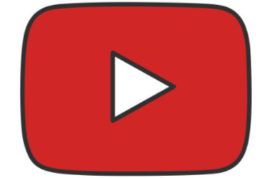
Video: Navigating the GOOS BioEco Portal
The portal's main interface (A) consist of an interactive global map on which the locations of Biological and Ecosystem EOV observations can be seen. Monitoring sites, stations or equipment deployment locations are provided as points on the map. Larger areas of monitoring is is presented as polycons. Line transects are indicated by lines on the map. Click on a specific location on the map to get a list of programmes for that location, or click on a specific point/ polygon to see the pogramme associated with that location. The panel on the left (B) shows the total number of programmes currently in the portal as well as the total number of programmes for specific EOVs. The results in the map can be filtered to show specific (C) EOVs, (D) EOV sub-variables and EBVs by selecting for them in the panel. Filtering can also be done according to the desired Readiness levels (E) of a programme. Specific programmes can also be filtered/ searched for by filtering for them by name (F) or by selecting from the list.
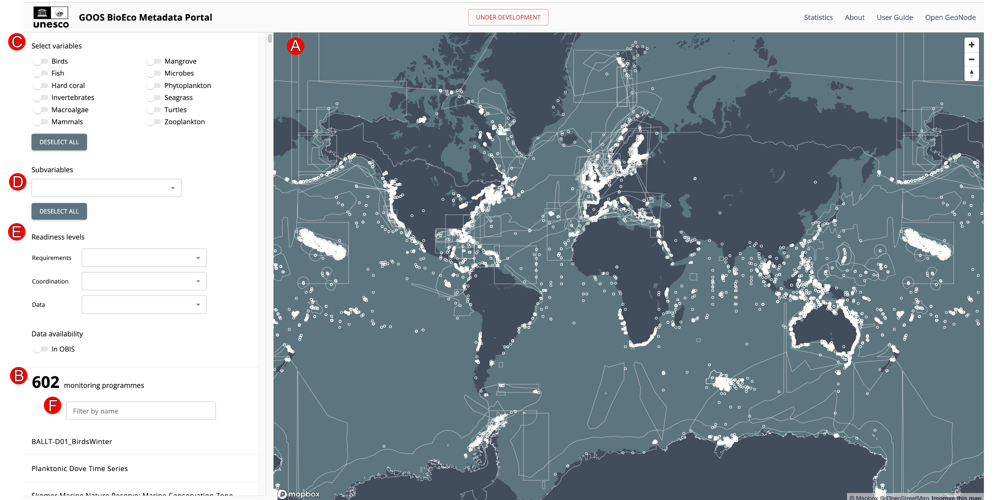
When selecting an individual programme, or searching for a programme by name, a new panel will open containing all the available metadata for that programme (G), as entered and maintained by the metadata provider for that programme. Clicking on ZOOM (H) will direct the interactive map to the location of where the monitoring is done, indicated on the map by red dots for individual locations or by a red polygon for areal locations. If no spatial layer is available for the programme, the zoom option is replaced with NO SPATIAL DATA. Additionally, an option to REPORT ISSUE is provided with each programme in case it is needed.
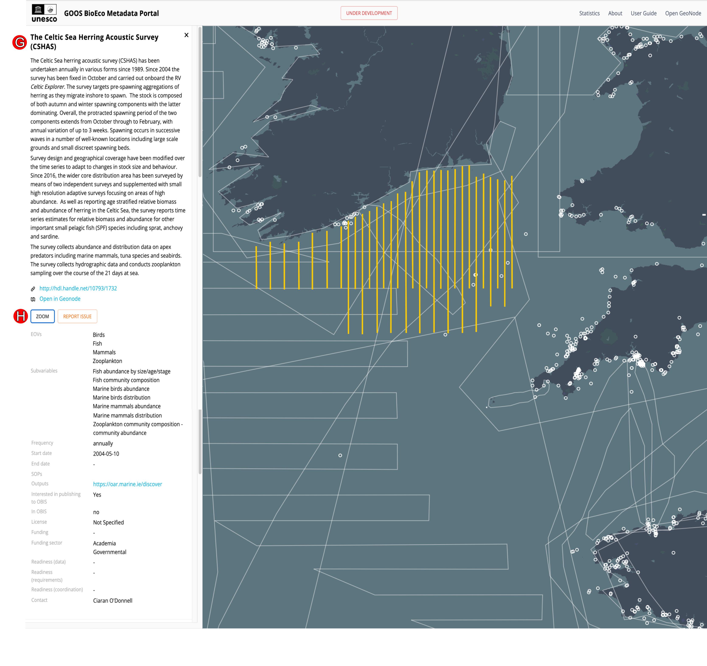
How to contribute a programme to the BioEco portal?
Contribute your programme metadata or explore additional metadata of existing programmes in the portal by navigating to GOOS BioEco GeoNode, where new programme metadata is uploaded and existing programme metadata accessed, managed and updated. This documentation and a direct link to the portal is provided on the main page of GeoNode.
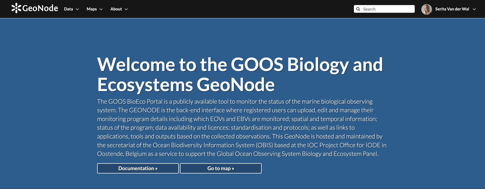
1. Register your GeoNode account
Video: Register your GeoNode account
If you would like to contribute a monitoring programme(s) to the portal, register as a new user or metadata data provider at the top right hand corner of the GeoNode GOOS BioEco homepage. You will be prompted to provide basic details such as an email address, username and password. This personal information will be used solely for the purposes of maintaining a GeoNode account and gaining exclusive access to edit or maintain your programme metadata. This information will not be used or distributed to third parties.
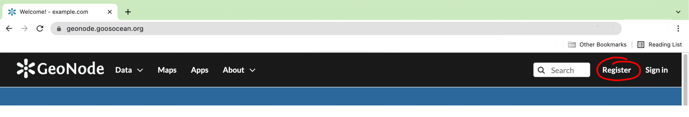

User account and profile
After the details have been completed, you will be signed in and redirected to the homepage with your username indicated on the top right hand corner. An arrow next to the username provides a drop down menu with basic user and account options. From the Profile page, personal information and options can be added, such as a user picture, your organisation, position, location. Interaction with other users is possible by Message User or Invite Users
2. Add monitoring programmes
Video: Add monitoring programmes
GeoNode offers two ways in which new monitoring programmes can be added, which depend on the format of the spatial information of the programme:
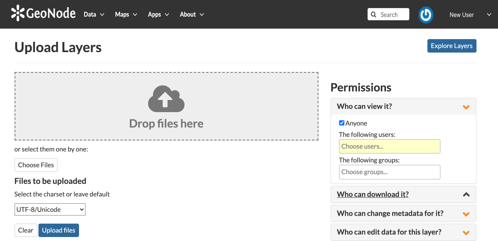
2.1 By uplaoding a shapefile (preferred)
Video: By uploading a shapefile (preferred)
If the spatial information for your programme is in the format of a shapefile, navigate to the Profile page. A few options are available to upload specific data and data types. To create and upload a new monitoring programme, select Upload new layers. Alternatively, select Upload Layer from the Data drop down menu on the top toolbar.
Upload your shapefiles by dragging and dropping them to the upload area, or upload them from your device by using the Choose Files option. Uploaded files should not exceed a maximum combined size of 100 MB.
Select the correct charset option for your documents and click Upload files.
The permissions panel can be used to set permissions for other GeoNode users to view, download and edit your uploaded data.
The default options for viewing and downloading data is set as Everyone, meaning any GeoNode user. In order to protect your data, specific users or groups must be specified to be able to change metadata, or edit and manage your data. If no user/ group is specified, the default for these functions will remain with the owner user only.
The upload status will be visible at the top of the Upload page along with a time stamp of when the layer was created and the progress. Once the upload is complete, click on the Name of the layer, which will be identical to the name of the files uploaded. The newly created layer and spatial metadata can be viewed by navigating to your layer and selecting Metadata detail.

2.2 Using the GeoNode map tool
Video: Using the GeoNode map tool
Alternatively, without a shapefile, navigate to the Profile page. A few options are available to upload specific data and data types. To create and upload a new monitoring programme, select Create a new layer. Alternatively, select Create Layer from the Data drop down menu on the top toolbar.
The Layer name forms part of the unique identifier for your programme in it's URL. When creating a layer by uploading files, the Layer name will be identical to the file name of the uploaded file. When creating a layer using the map tool, you will be prompted to provide a Layer name, which usually a shortened version of the complete title of the program. For example, if the Layer name is given as programme_shortened_title, the URL for the layer would be: https://geonode.goosocean.org/layers/geonodedata:geonode:geonode:programme_shortened_title. Provide the full name of your monitoring programme under Layer title. Choose the preferred Geometry type for the spatial data and click Create.An empty layer has now been created to which you can add your spatial data. Navigate to Editing tools and select Edit data under Layer which will open the map tool in GeoNode.
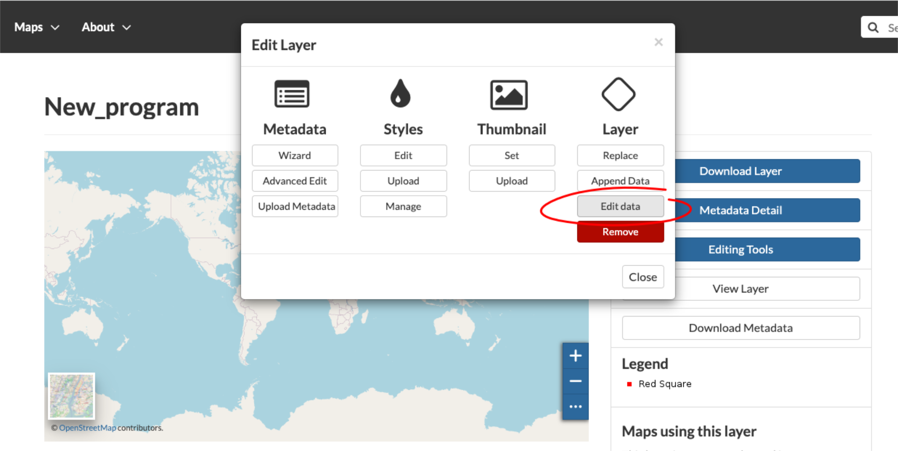
Begin by adding an attribute number in the space provided at (A) and select the Edit mode. Select Add New feature followed by Draw feature. Using the mouse, navigate on the map and indicate the location. Alternatively, search for a specific location by name or enter your coordinates at the top right hand corner marked (B). The coordinates of the mouse location can also be viewed by clicking on the mouse icon at the bottom right hand corner marked (C). Save your selected location.
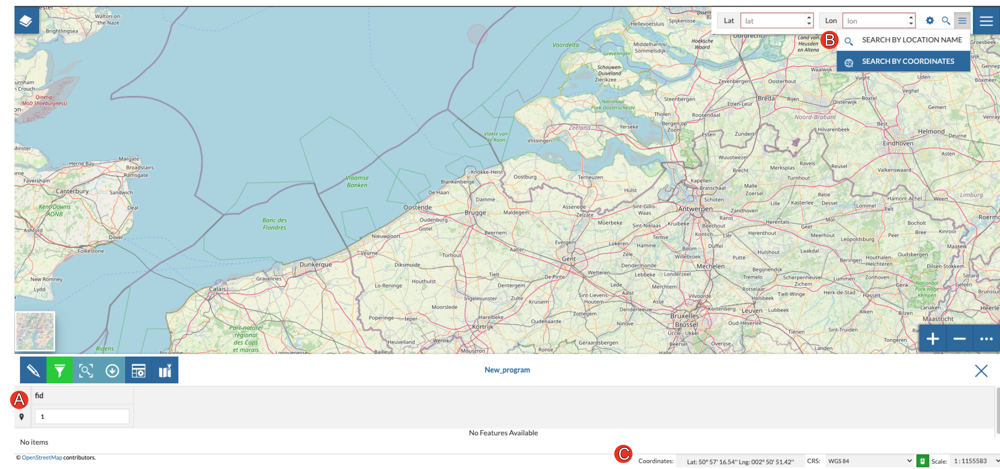
3. Editing programme metadata
Video: Editing programme metadata
Registered users have exclusive access to edit and update the metadata of their assigned programme. Regular updates of programme metadata is essential to keep the BioEco portal current and representing the true current state and status of ocean observation. In order to do so, we encourage on our metadata providers to keep their programme layer up to date as the programme develops and progresses.
By selecting Editing Tools on the right hand panel, the spatial- and metadata layer can be edited, removed or updated.
Only the signed-in owner of a programme and admin have access to edit the metadata of a programme. If the editing tools are not available to the owner, it is likely due to the default setting of admin as owner. In this case, please contact admin at helpdesk@obis.org to have the ownership changed and gain access to the editing tools.
To edit, or add to the spatial layer select Edit data under Layer. Select Advanced Edit under Metadata to provide necessary information about the uploaded programme.
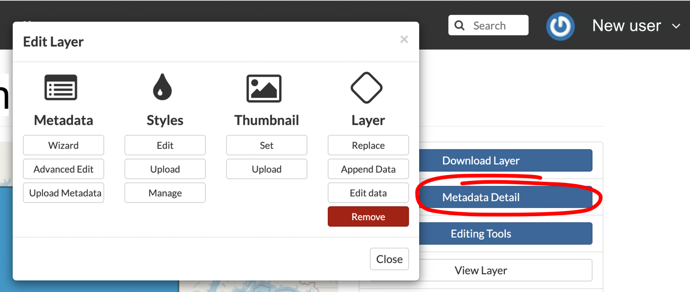
3.1 Updating programme spatial information (map)
If the spatial scope of the programme has increased or changed over time, the spatial information (shapefile) should be updated. Equally, programmes that still lack spatial information should follow the same recommendations to upload their programme's spatial scope.
Option 1: In order to avoid frustrating errors when updating programme spatial data on GeoNode, carefully consider the format and name of the file(s) you would like to upload. The file name, the name of the layer within the file, and the geometry type used in the file, have to be identical to that of the existing file that is being replaced.
Option 2: Before updating the file, download the layer from GeoNode by selecting Download Layer. The layer data can be downloaded in various formats under Pick your download format, either as the complete original dataset or only spatial files. Make the changes to the downloaded files on your device and finally re-upload the file.
Option 3: If all else fails, delete the existing layer and create a new layer all together. This option might be a bit more time consuming as it will require providng all the programme metadata once again, but will ensure that there are no issues with file types.
Option 4: For layers with geometry type LineString, which might be more complicated to transform and will cause issues if the updated files do not have the same geometry type. In these cases, the geometry would most likely need to be changed in the database. If this is the case with your layer and you experience difficulty uploading updated files, please get in touch with admin either by sending an email to helpdesk@obis.org, or create an issue here.
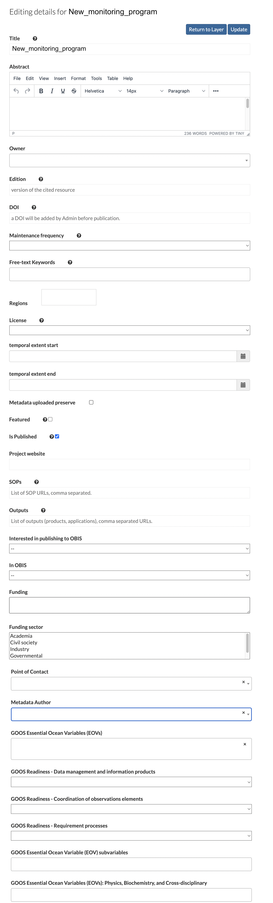
3.2 Programme
Provide a Title and an Abstract with a short introduction to/ basic info on the monitoring programme. The Owner will be indicated as the metadata provider that uploaded the metadata indicated either by their email address or username. Edition refers to the version of the cited resource, which could be useful when frequent updates to the metadata are made.
The field for DOI will be completed by admin and should be left open. Maintenance frequency refer to the intervals in which data is collected/ observations are made. Choose from the drop-down selection. Note, for observations made continuously, select option 'sub-daily' and for once-off observations, select the option 'opportunistically/ highly irregular intervals'. A space is provided for Free-text Keywords that are useful for user filtering options. Select the applicable Regions (countries) where the monitoring is done. Note that newly uploaded programmes can have default Regions which should be revised.
3.3 Data accessibility
Provide the Licence licence applicable to the data/ metadata of the programme. Choose from the drop-down selection. More info on creative commons licence types and descriptions can be found here.
temporal extent start and temporal extent end indicate the dates at which the programme was implemented or started, and when it ended, in the format dd.mm.yyyy. If it is currently still active, leave the field empty or provide a future date if the programme is planned to end at a specific date in the future.
The fields Metadata uploaded preserve, Featured and Is Published will be completed by admin and can be left empty.
Provide a URL or link to the main Project website of the monitoring project, a link to SOPs used and/ or Outputs, where available.
Please indicate whether or not the programme data is available (or partly available) in OBIS, under In OBIS; and indicate if the data provider/ project managers are Interested in publishing to OBIS.
Indicate the names of the funder(s) of the monitoring programme under Funding and specify the Funding sector of the funder(s) by choosing from the drop-down selection.
The username of the Point of contact or the person reponsible for providing the information is required, as well as the username of the Metadata author. Note: Only registered users can be a programme's Point of contact and/ or Metadata author. Note: Programme metadata can only be edited and/ or added by the "owner" of the layer, thus, the Point of contact. To change ownership of the layer, or change the Point of contact, please contact admin or Report an issue
3.4 GOOS Essential ocean variables (EOVs)
Select all the GOOS Biology and Ecosystems Essential Ocean Variables (EOV) observed/ monitored. Choose from the drop-down selection under GOOS Essential Ocean Variables (EOVs). Multiple selection of EOV’s is possible.
3.5 Readiness levels
Provide the levels of readiness of GOOS Readiness - Data management and information products, GOOS Readiness - Coordination of observations elements and GOOS Readiness - Requirement processes according to the options provided in the drop down menu. The readiness level system is the approach for evaluating new components for possible inclusion in the global ocean observing systems. For more info on the categorization and description of levels, see A Framework for Ocean Observing and the figure below.
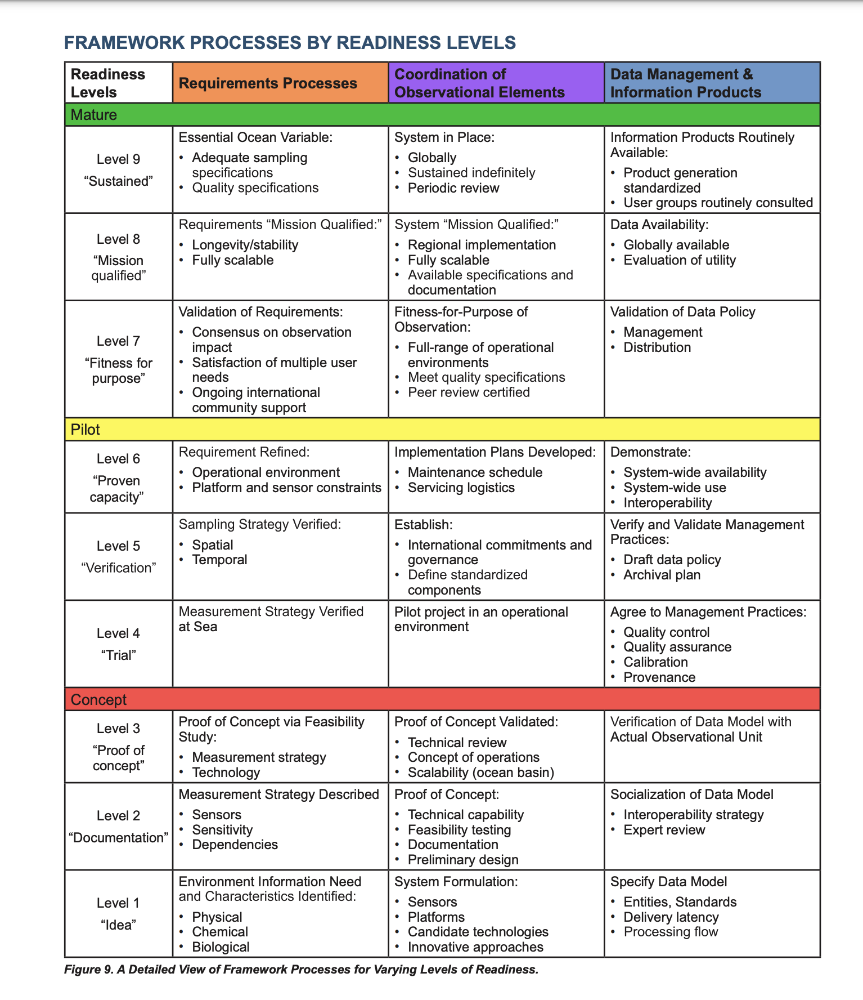
3.6 GOOS EOV subvariables, non-BioEco EOVs and EBVs
Additional measurements taken/ observations made of the BioEco EOV(s) selected under GOOS Essential Ocean Variables (EOVs), should be provided under Essential Ocean subvariables (EOV subvariables) & Essential Biodiversity Variables (EBVs). Non-BioEco EOVs, such as Physics, Biochemistry, and Cross-disciplinary EOVs, should be provided under GOOS Physics, Biochemistry, and Cross-disciplinary EOVs. Choose from the drop-down selection and add as many sub-variables as needed. For information on, and descriptions of sub-variables, refer to the GOOS specification sheet (under development) of each respective EOV. Information regarding EBVs are provided by GEO BON (What are EBVs?), with well-defined descriptions of each EBV at the bottom of the latter webpage.
4. GeoNode map tool and creating a new map
GeoNode's interactive map tool (©OpenStreetMap contributors) is a useful tool for creating maps with new spatial data or by using data from an existing monitoring programme on GeoNode GOOS BioEco. It further enables the user to perform basic functions such as measuring physical distances and browsing locations or coordinates. Navigate to Create a new map under Profile. Alternatively, select Create Map from the Maps drop down menu.

A. Add Layers to a map. Select the monitoring programme from which a layer should be imported onto the map. Alternatively, see C.
B. Use the Search tool to navigate to specific locations or search for a location using coordinates. The latter option will provide fields to input latitudinal and longitudinal values. Click the Settings icon under Search by coordinates to select either decimal or aeronautical coordinate input.
C. The Options drop down menu is used to print or save a newly created map. Select Catalog to browse and choose a monitoring programme to load onto the new map. Measure distances, areas or bearings on the map in various units by selecting the desired options. Click and drag the computer mouse to continue drawing a line or polygon. The resulting measurements or polygons can be exported to GeoJSON or added as a layer by selecting the icon.
D. Map options allow for easy navigation and zooming on the map. Query objects on map by selecting the destination/ location icon and clicking on the object of interest on the map.
E. The bottom toolbar presents the scale of the map, which can be selected from the drop down menu or by zooming in or out on the map. The actual coordinates of the location at which the mouse point is positioned, is showed. In this toolbar, the preferred Coordinate reference system (CRS) can also be selected.
5. Report an issue
Please report any issues regarding GOOS BioEco GeoNode here.
Issues encountered in the GOOS BioEco portal can be reported here.